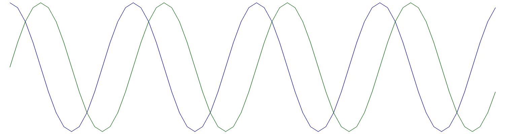

Fourier transform

This module is a set of functions based on the Discrete Fourier Transform (DFT).
#include "dsp/fourier.hpp"
Sub-groups
Correlation and time delays
Correlation and time delays.
Spectral estimation
Spectral estimation.
Structures
struct FFTFilterConfig
Configuration structure for a FFT based filter (see filter_fft()).
Functions
sptr<FFTPlan> fftplan_new(int n=-1, bool forward=true, bool normalize=true)
Creation of a FFT computing plan (to compute efficiently several FFT).
sptr<FilterGen<float, cfloat>> rfftplan_new(int n=-1)
Creation of a FFT computing plan for real signals (to compute efficiently several FFT).
Veccf rfft(const Vector<T> &x)
FFT of a real vector.
Vector<T> resample_freq(const Vector<T> &x, float ratio)
DFT based zero-phase resampling.
auto fft(const Vector<T> &x)
Fast discrete Fourier Transform (FFT).
auto ifft(const Vector<T> &X)
Inverse Fast discrete Fourier Transform.
Vector<T> fftshift(const Vector<T> &X)
Spectrum shift so as to be centered on the low frequencies.
void force_csym(Vector<T> &X)
Change a vector so as it has the conjugate symetry proporty.
tuple<sptr<Filter<cfloat, cfloat, FiltreFFTConfig>>, int> filter_fft(const FFTFilterConfig &config)
Creation of frequency domain filter (OLA / OverLap-and-Add technique).
void ola_complexity(int M, int Ne, float &C, int &Nf, int &Nz)
Compute the complexity of an OLA filter, in FLOPS by input sample.
void ola_complexity_optimize(int M, float &C, int &Nf, int &Nz, int &Ne)
Compute optimal parameters for an OLA filter.
Veccf czt(const Veccf &x, int m, cfloat W, cfloat z0=1.0f)
Z-chirp transform.